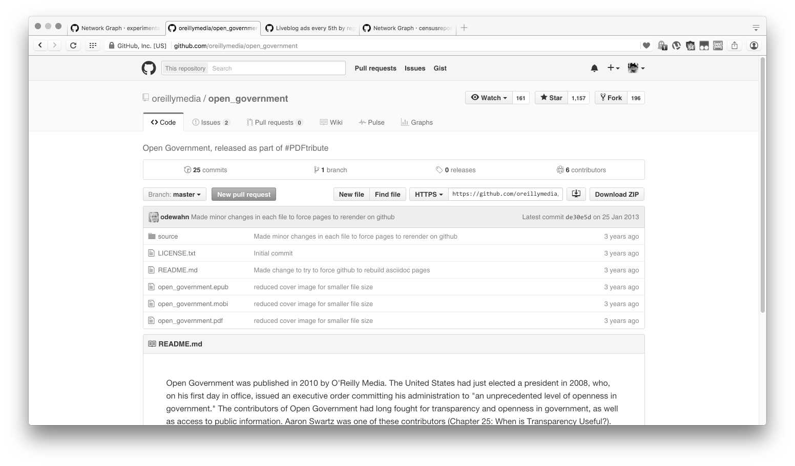
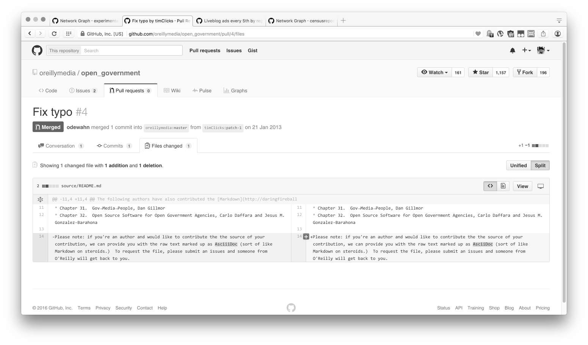
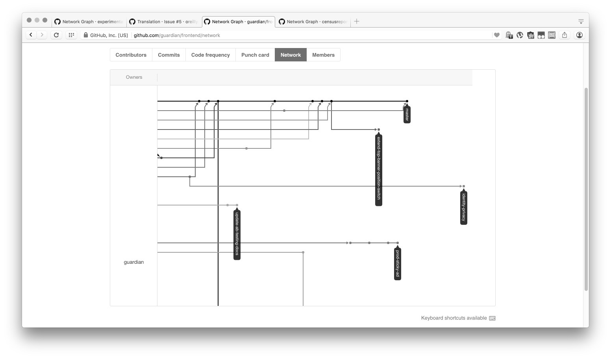

-

Github Oberfläche
-

Github ist für Programmcode gedacht.
Zunehmend wird Github aber auch zur gemeinsamen Bearbeitung von Texten und anderen Inhalten verwendet. Hier zum Beispiel für das Buch "Open Government" des O'Reilly Media Verlages.
-

Versionsmanagement:
Mit Github kann man unterschiedliche Versionen genau vergleichen, Änderungen zusammenführen und protokollieren, wer, wann, was geändert hat.
-

Juan Julián Merelo Guervós auf Github geschriebene Novelle "Hoborg".
Der spanischstämmige Author hat sein "Dieselpunk" -Manuskript öffentlich geschrieben und wurde dabei von vier freiwilligen 'Lektoren' unterstützt. Das fertige Buch ist mittlerweile bei Amazon erhältlich.
-

Arbeitsfluss:
Abwandlungen, Änderungen und Zusammenführungen des "Hoborg"-Manuskripts wurden von Github visualisiert.
-

theguardian.com
Die britische Tageszeitung verwaltet mit Github ihre Webseite.
-

3D Inhalte:
Dateien im für 3D Druckdaten gebräuchlichen .STL Format können angezeigt und verglichen werden. Hier ist der gleichbleibende Teil durchsichtig, der alte Teil rot und die Änderungen in grün, dargestellt.
-

Sonderformate:
Github hat neben Code und Textbearbeitung auch eine wachsende Zahl von Plugins für Sonderformate. Hier zum Beispiel für das Landkartenformat GEOJSON. Auch Photoshop-Dateien oder SVGs können angezeigt und verglichen werden.
-

Lokale Installation:
Github ist die einzige Plattform, die eine extra Software vorraussetzt. Man braucht das Kommadozeilenprogramm Git, oder eine git-basierende Software. Für den Einstieg entwickelt Github an einer eigenen Software für Windows und OSX die mittlerweile beta-Stadium erreicht hat.